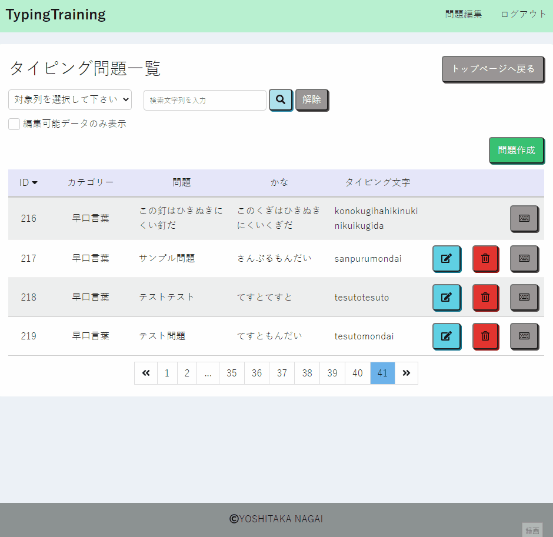

タイピング練習アプリ

概要
タイピング練習webアプリケーションです。
タイピング問題作成、履歴データ閲覧も可能です。
PCから閲覧、キーボードを使用して実行することを想定して作成しています。
公開URL
目的
- フレームワークを使用したアプリケーションの作成
- PHP、Laravelの勉強
- Laravelの認証機能を使用、カスタマイズする
- 繰り返し遊ぶことのできるアプリケーションの作成
- Vueを使用したSPAの作成
- タイピングが遅いから鍛えたい
使用言語
- PHP
- Javascript
- HTML
- CSS
- MySQL
フレームワーク
- Laravel@6.20.32
- Vue@2.6.14
ライブラリ、プラグイン等
- vue-router@3.5.2
- vuex@3.6.2
- chart.js@2.9.3
- vue-chartjs@3.5.1
- chartjs-plugin-datalabels@1.0.0
- vue-js-modal@2.0.1
開発環境
- Windows10
- XAMPP
- Visual Studio Code
- git(SourceTree使用)
機能一覧
- トップ画面
- 会員メニュー
- タイピングメニュー
- 履歴データ
- ログイン/新規登録画面
- ログイン
- 新規ユーザー登録
- 問題編集画面
- データ一覧表示
- 作成
- 編集
- 削除
- タイピングテスト
- タイピング画面
- 待機画面
- タイピング
- 結果表示
テーブル定義書
機能紹介
トップ画面
会員メニュー、タイピングメニュー、履歴データが表示されます。
会員メニュー
非ログイン時
- ログインボタン：ログイン
ログイン時
- 問題編集ボタン：問題編集ページへ遷移
- ログアウトボタン：ログアウト
- ユーザー名：登録ユーザー名を表示
- 総タイプ数：今までの合計タイプ数（ミスタイプは含まず）を表示
- 平均WPM：今までの平均WPMを表示
タイピングメニュー
登録されているタイピングカテゴリーが表示されます。クリックするとタイピング用のモーダルウィンドウが開かれます。
履歴データ
ログインユーザーのみ表示されます。今までの履歴データを閲覧でき、対象カテゴリーを変更することで表示を変更できます。
ログイン/新規登録画面
ログインまたは新規ユーザー登録を行いログインできます。
ログイン
ユーザー名、パスワードを入力してログインします。
新規ユーザー登録
ユーザー名、パスワード、パスワード確認を入力して新規登録します。パスワードは半角英数字4文字以上の制限があります。既に存在しているユーザー名の場合は登録できません。
問題編集画面
データ一覧表示

登録されている問題データが表示されます。編集可能データのみ表示の切替もできます。テーブルヘッダーをクリックすることで昇順、降順で並び替えができます。検索機能を使用するとデータの絞り込みができます。
作成、編集
問題データを作成できます。問題フォームへ入力された文字列からふりがなとローマ字を生成（Yahoo ルビ振りWebAPIを使用）できます。編集は自分が作成したデータのみ可能です。（管理者ユーザーは全て可能です）
削除
問題データを削除します。自分が作成したデータのみ可能です。（管理者ユーザーは全て可能です）
タイピングテスト
問題のタイピングテストを行うことができます。全てのログインユーザーが実施可能です。
タイピング画面
タイピングを行う画面です。タイピングはPCでの操作を想定して作成しています。
待機画面

- 問題数：出題される問題数
- 音声の有無：タイプミス時の音声の有無
- 制限時間の有無：問題の合計タイプ数とWPM目標値に応じた制限時間の有無
- WPM目標値：制限時間設定のWPM値
タイピングスタート待機画面です。タイピングでの設定を行います。スペースキー押下でタイピングがスタートします。（3秒のカウントダウンが始まります。）
タイピング

- 問題テキスト
- かなテキスト
- タイピング文字（入力済み文字はオレンジ色）
- 制限時間バー
- 現在入力対象キー
- 現在入力対象キーの指
表示されているタイピング文字通りにタイピングを行います。音声有りの場合はミス時に音声が鳴ります。設定した問題数を終える、または制限時間設定有りの場合は残り時間が無くなると結果画面が表示されます。キー入力判定アルゴリズムは柔軟な入力方法に対応したタイピングゲームの作り方で紹介されているものを参考、改変させていただきました。
結果表示
- WPM：1分間あたりのタイプ回数
- ミスタイプ数：間違ったキーをタイプした回数
- 正答率：ミスタイプ数 / 合計タイプ数 × 100
- ミスキー：ミスしたキーとその回数
- キーボード：ミスしたキーが回数の割合に応じて色付けされる
タイピング結果が表示されます。履歴データ表示ボタンをクリックすると選択されているカテゴリーの履歴データが表示されます。
作り終えて
- VueとJavascriptの勉強に時間を多く使ってしまった。
- フロントエンドをVueで作成した為、LaravelでのBladeテンプレートの使い方をほとんど勉強できなかった。
- 今回は機能作成に力を入れたが、今後はデザインもしっかりと行いたい。
- タイピングのキー入力判定が思っていたより複雑だった。参考アルゴリズムに改変を加えたがまだ抜けがある。
- 本番環境へのデプロイだけに2日程時間を使ってしまったが、サーバー構築の勉強になった。